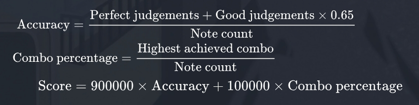
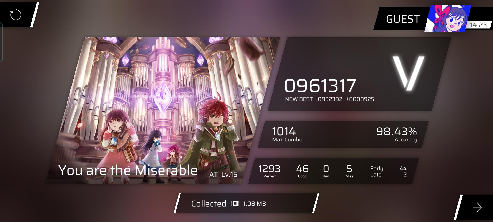

MORE into the mechanisms of this such of a rhythm game
Have you ever wondered, why does that AP but 1 miss score of you only get you a mere score of 950k (S rank)? This page will take you to the advanced mechanisms of how scores are graded, and more!
1. Scoring system
Score is comprised of two factors, accuracy and the highest achieved combo.
To put in exmaple, think about the sample mentioned above. Chances are, you have "successfully" missed a note right in the middle, leading to the combo percentage being only around 50%. In other words, you lost 50,000 points from breaking the combo halfway.
Let's have a small practice with this random score found on the Internet.
Given the pre-calculated accuracy, lets "fact check" it using the formula provided -> 1293 + 46*0.65 / 1293 + 46 + 5
The result provided by my Casio-fx**580 (** is a certain country) is 0.9843, or 98,43%! (haha basic math)
Now for the combo percentage, it will be 1014/1293 + 46 + 5, which gives the result of around 75.45%
Putting it all toghether, we should have the score given:
900.000*98,43% + 100.000*75.45% ~ 961.320, pretty close to it considering the rounding ups we have done.
When completing a song, the player is taken to the results screen. Upon the image above, they are shown their score, accuracy, and a rank based on their score. A rank or above counts as a clear.
Rankings based on the score obtained:
| Grade | Score range | |
|---|---|---|
| Normal | Challenge mode | |
| 1.000.000 (All Perfect) | Obtain All Perfect on all 3 songs chosen. | |
| Full Combo | Obtain Full Combo on all 3 songs chosen. | |
 |
960.000-999.999 | 2.880.000-2.999.999 |
| 920.000-959.999 | 2.760.000-2.879.999 | |
 |
880.000-919.999 | 2.640.000-2.759.999 |
| 820.000-879.999 | 2.460.000-2.639.999 | |
| 700.000-819.999 | 2.100.000-2.459.999 | |
| < 700.000 | < 2.100.000 | |
2. Challenge mode
Have you wondered, what is Challenge Mode and why have we kept yapping about it for so long before?
Challenge Mode is a separate game mode introduced in version 2.0.0 and is unlocked upon completing the last main chapter (currently Chapter VIII).
In this mode, the player selects three songs and their difficulty, then plays all three charts back to back.
The same chart can not be selected more than once, but multiple difficulties of the same song can. Legacy charts cannot be selected at all. Mirror charts ,SP charts and reseting is also not allowed.
In Challenge Mode, the timing windows for the judgements are stricter than regular play, being ±40ms for
Perfect, ±75ms for Good and ±140ms for Bad.
The scoring system is also different, not using combo in scoring at all and using accuracy alone.
3. Rating
Upon completing a Challenge Mode run, you are not only given a rank, but also a rating with a number and background that you may choose to accept or not (wow such colorful i love). The number is the sum of the difficulty ratings of the three charts you played, while the background is based on the sum of the scores you got on those levels. If your score is below 2,460,000, no rating is awarded at all.
Another table for you to understand:
| Background | Total score range | Average song score (minimum requirement) |
|---|---|---|
| 3.000.000 | All Perfect on each song. | |
| 2.940.000-2.999.999 | 980.000 | |
| 2.850.000-2.939.999 | 950.000 | |
| 2.700.000-2.849.999 | 900.000 | |
| 2.460.000-2.699.999 | 900.000 | |
| No backgrounds given. | N/A | |
4. Charts difficulty
In Phigros, most songs have three difficulties each: Easy (EZ), Hard (HD), and Insane (IN). The EZ and HD difficulties of an unlocked song will be available by default. If your Ranking Score is 11 or higher, the IN difficulty of all the songs in Legacy and Single Chapter and the first song in each chapter will also be unlocked. To unlock a higher difficulty of a song, you must either get an S rank or higher on the previous diffifculty of the song, or get an A rank or higher on the same difficulty of the previous song in the chapter (only applies to certain songs rerquired). There is also the Another (AT) difficulty, which is only available for some songs, and the Special (SP) difficulty, which is exclusive to hidden songs. Each chart has a difficulty level, a value that indicates the chart's difficulty. Each value except "?" is specified to the first decimal digit, but is truncated to an integer in-game. (The extra digit is used in calculating Ranking Score.) Currently, it ranges from 1 to 16, with 1 (1.0) being the easiest and 16 (16.8) being the hardest. The difficulty "?" is only for SP (usually during April Fools).
5. Ranking score (RKS)
The Ranking Score is a number the game uses to model the skill of a player (though its accuracy is debatable).
Ranking Score is based entirely on a player's accuracy in charts, instead of their scores.
A player's Ranking Score is based on their best 19 or 20 plays according to their RKS value.
During this calculation, an extra decimal point of precision is used for the chart difficulty. While this decimal place isn't directly visible, it's accounted for when sorting songs by difficulty and can be used to figure it out. The 19 highest RKS values that the player has achieved are added together, along with the highest RKS value that the player has achieved that is also 100% accuracy ( rank - if the player has not achieved 100% accuracy in any song, this value is 0). Then, the sum is divided by 20 to get the player's Ranking Score.